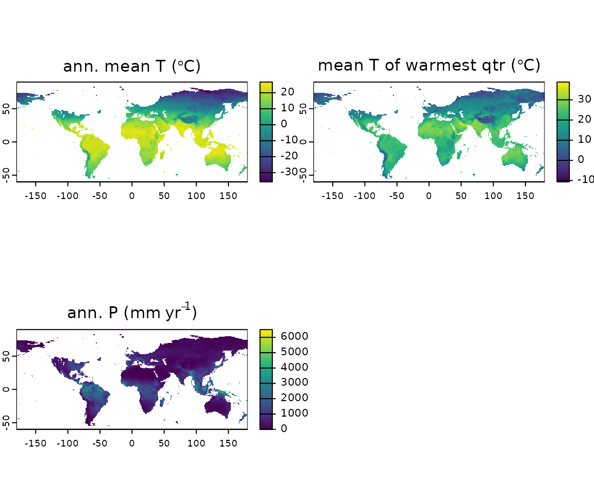
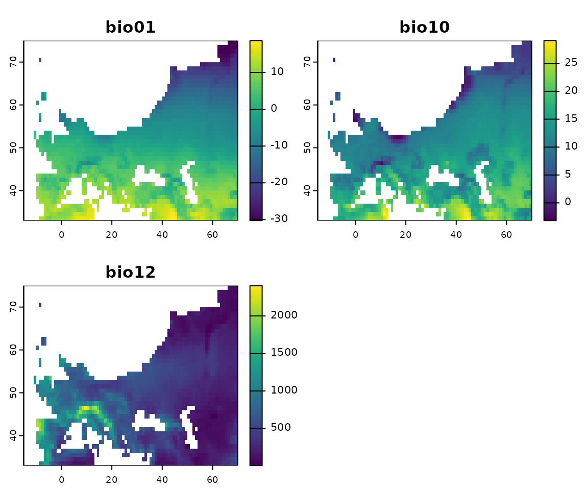
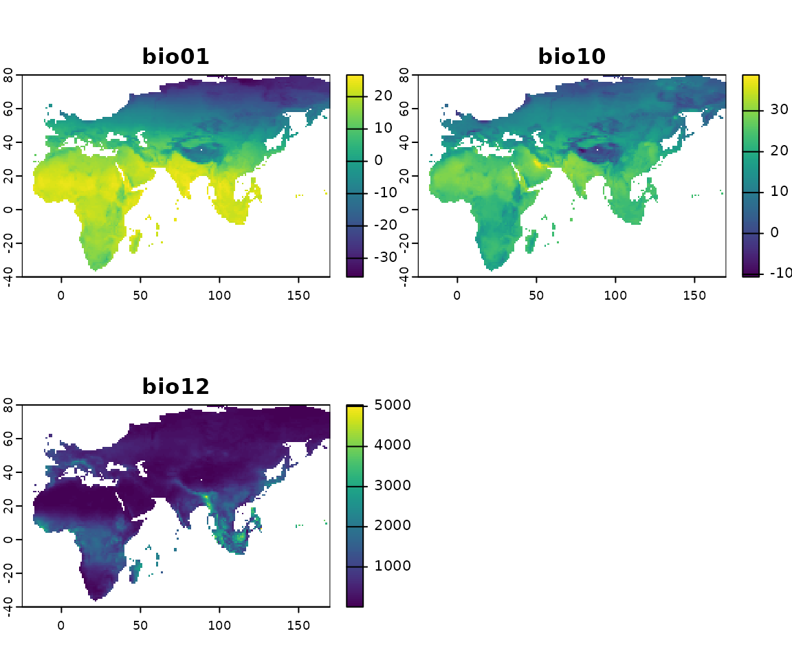
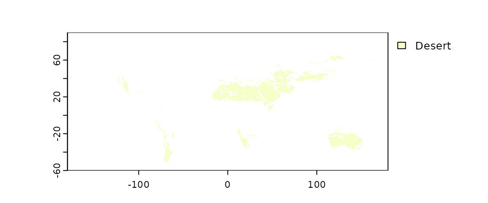
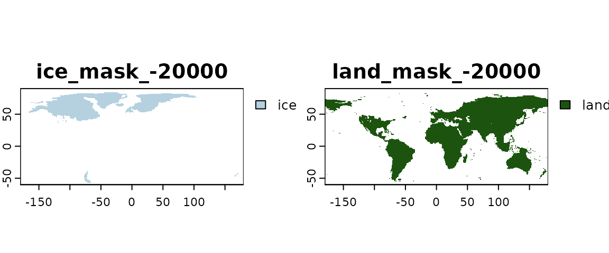
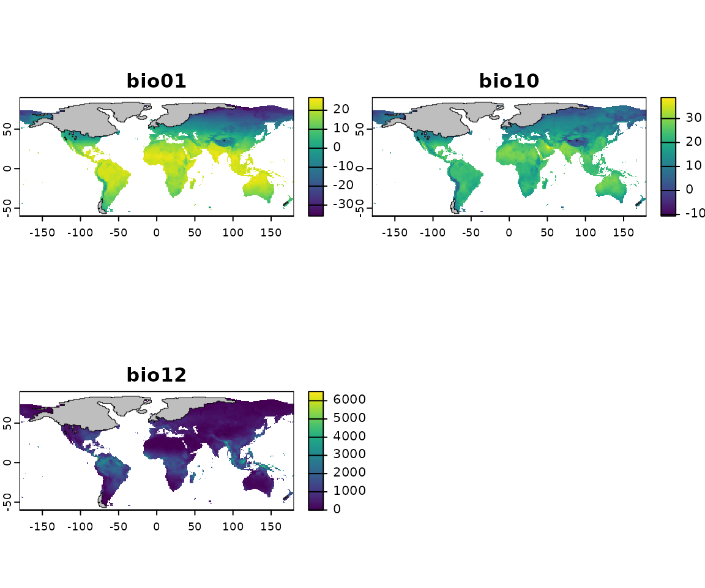
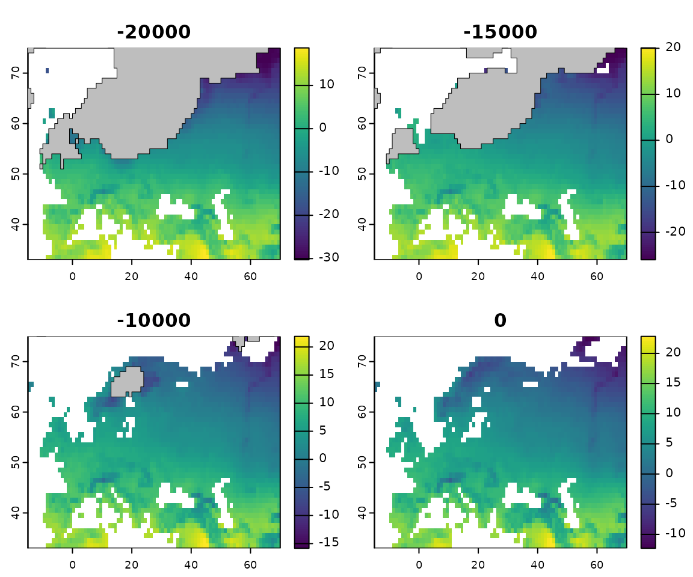
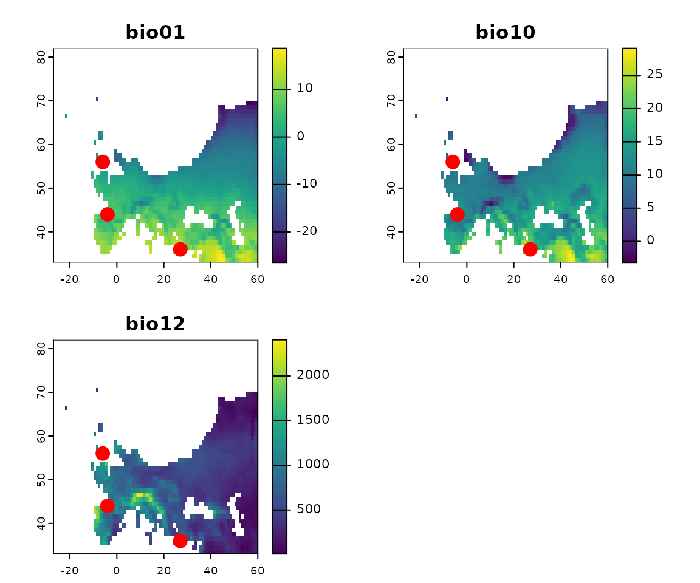

Install the library
pastclim is on CRAN, and the easiest way to install it
is with:
install.packages("pastclim")If you want the latest development version, you can get it from
GitHub. To install from GitHub, you will need to use
devtools; if you haven’t done so already, install it from
CRAN with install.packages("devtools"). Also, note that the
dev version of pastclim tracks changes in the
dev version of terra, so you will need to
upgrade to both:
install.packages("terra", repos = "https://rspatial.r-universe.dev")
devtools::install_github("EvolEcolGroup/pastclim", ref = "dev")On its dedicated website, you can
find Articles giving you a step-by-step overview
of the package, and a cheatsheet.
There is also a version of the
site updated for the dev version (on the top left, the
version number is in red, and will be in the format x.x.x.9xxx,
indicating it is a development version).
If you want to build the vignette directly in R when
installing pastclim from GitHub, you can :
devtools::install_github("EvolEcolGroup/pastclim", ref = "dev", build_vignettes = TRUE)And read it directly in R with:
vignette("pastclim_overview", package = "pastclim")Depending on the operating system you use, you might need additional packages to build a vignette.
Download the data
You will need to download climatic reconstructions before being able
to do any real work with pastclim. Pastclim currently
includes data from Beyer et al 2020 (Beyer2020, a
reconstruction of climate based on the HadCM3 model for the last 120k
years), Krapp et al 2021 (Krapp2021, which covers the last 800k
years with a statistical emulator of HadCM3), Barreto et al 2023
(Barreto2023), covering the last 5M years using the PALEO-PGEM
emulator), the CHELSA-TraCE21k, covering the last 21k years at high
spatial and temporal resolution (CHELSA_trace21k_0.5m_vsi), the
HYDE3.3 database of land use reconstructions for the last 10k years
(HYDE_3.3_baseline) the paleoclim dataset, a selected
few time steps over the last 120k years at various resolutions
(paleoclim_RESm), and the WorldClim and CHELSA data
(WorldClim_2.1_ and CHELSA_2.1_, present, and future
projections with a number of models and emission scenarios). More
information on each of these datasets can be found here,
or using the help page for a given dataset. For detailed instructions on
how to use the WorldClim and CHELSA datasets for present and future
reconstructions can be found in this
article There are also instructions on how to build and use custom
datasets, but you will need some familiarity with handling
netcdf files.
A list of all datasets available can be obtained by typing:
library(pastclim)
#> Loading required package: terra
#> terra 1.8.23
get_available_datasets()
#> Barreto2023, Beyer2020, CHELSA_trace21k_1.0_0.5m_vsi, Example, HYDE_3.3_baseline, Krapp2021, paleoclim_1.0_10m, paleoclim_1.0_2.5m, paleoclim_1.0_5m
#> for present day reconstructions, use "WorldClim_2.1_RESm" or "CHELSA_2.4_RESm" where RES is an available resolution.
#> for future predictions, use "WorldClim_2.1_GCM_SSP_RESm" or "CHELSA_2.1_GCM_SSP_RESm", where GCM is the GCM model, SSP is the Shared Socio-economic Pathways scenario.
#> use help("WorldClim_2.1") or help("CHELSA_2.1") for a list of available optionsPlease be aware that using any dataset made available to
pastclim will require to cite both pastclim as
well as the original publication presenting the dataset. The reference
to cite for pastclim can be obtained by typing
citation("pastclim")
#> To cite pastclim in publications use:
#>
#> Leonardi M, Hallet EY, Beyer R, Krapp M, Manica A (2023). "pastclim
#> 1.2: an R package to easily access and use paleoclimatic
#> reconstructions." _Ecography_, *2023*, e06481. doi:10.1111/ecog.06481
#> <https://doi.org/10.1111/ecog.06481>.
#>
#> A BibTeX entry for LaTeX users is
#>
#> @Article{pastclim-article,
#> title = {pastclim 1.2: an R package to easily access and use paleoclimatic reconstructions},
#> author = {Michela Leonardi and Emily Y. Hallet and Robert Beyer and Mario Krapp and Andrea Manica},
#> journal = {Ecography},
#> year = {2023},
#> volume = {2023},
#> pages = {e06481},
#> publisher = {Wiley},
#> doi = {10.1111/ecog.06481},
#> }while the reference associated to any dataset of choice (in this case “Beyer2020”) is displayed together with the general information on that dataset through the command:
help("Beyer2020")#> Documentation for the Beyer2020 dataset
#>
#> Description:
#>
#> This dataset covers the last 120k years, at intervals of 1/2 k
#> years, and a resolution of 0.5 degrees in latitude and longitude.
#>
#> Details:
#>
#> IMPORTANT: If you use this dataset, make sure to cite the original
#> publication:
#>
#> Beyer, R.M., Krapp, M. & Manica, A. High-resolution terrestrial
#> climate, bioclimate and vegetation for the last 120,000 years. Sci
#> Data 7, 236 (2020). doi:10.1038/s41597-020-0552-1
#> <https://doi.org/10.1038/s41597-020-0552-1>
#>
#> The version included in 'pastclim' has the ice sheets masked, as
#> well as internal seas (Black and Caspian Sea) removed. The latter
#> are based on:
#>
#> <https://www.marineregions.org/gazetteer.php?p=details&id=4278>
#>
#> <https://www.marineregions.org/gazetteer.php?p=details&id=4282>
#>
#> As there is no reconstruction of their depth through time, modern
#> outlines were used for all time steps.
#>
#> Also, for bio15, the coefficient of variation was computed after
#> adding one to monthly estimates, and it was multiplied by 100
#> following <https://pubs.usgs.gov/ds/691/ds691.pdf>
#>
#> Changelog
#>
#> v1.1.0 Added monthly variables. Files can be downloaded from:
#> <https://zenodo.org/deposit/7062281>
#>
#> v1.0.0 Remove ice sheets and internal seas, and use correct
#> formula for bio15. Files can be downloaded from:
#> doi:10.6084/m9.figshare.19723405.v1
#> <https://doi.org/10.6084/m9.figshare.19723405.v1>For the datasets available in pastclim, there are
functions that help you download the data and choose the variables. When
you start pastclim for the first time, you will need to set
the path where reconstructions are stored using
set_data_path. By default, the package data path will be
used:
#> The data_path will be set to /home/andrea/.local/share/R/pastclim.
#> A copy of the Example dataset will be copied there.
#> This path will be saved by pastclim for future use.
#> Proceed?
#>
#> 1: Yes
#> 2: NoPress 1 if you are happy with the offered choices, and
pastclim will remember your data path in future sessions.
Note that your data path will look different than in this example, as it
depends on your user name and operating system.
If you prefer using a custom path (e.g. in “~/my_reconstructions”), it can be set with:
set_data_path(path_to_nc = "~/my_reconstructions")The package includes a small dataset, Example, that we will use in this vignette but is not suitable for running real analyses; the real datasets are large (from 100s of Mb to a few Gb), and you will need to specify what you want to download (see below).
Let us start by inspecting the Example dataset. We can get a list of variables available for this dataset with:
get_vars_for_dataset(dataset = "Example")
#> [1] "bio01" "bio10" "bio12" "biome"and the available time steps can be obtained with:
get_time_bp_steps(dataset = "Example")
#> [1] -20000 -15000 -10000 -5000 0We can also query the resolution of this dataset:
get_resolution(dataset = "Example")
#> [1] 1 1so, the *Example” dataset only has a resolution of 1x1 degree.
For Beyer2020 and Krapp2021, you can get a list of available variables for each dataset with:
get_vars_for_dataset(dataset = "Beyer2020")
#> [1] "bio01" "bio04" "bio05" "bio06" "bio07" "bio08"
#> [7] "bio09" "bio10" "bio11" "bio12" "bio13" "bio14"
#> [13] "bio15" "bio16" "bio17" "bio18" "bio19" "npp"
#> [19] "lai" "biome" "altitude" "rugosity"and
get_vars_for_dataset(dataset = "Krapp2021")
#> [1] "bio01" "bio04" "bio05" "bio06" "bio07" "bio08"
#> [7] "bio09" "bio10" "bio11" "bio12" "bio13" "bio14"
#> [13] "bio15" "bio16" "bio17" "bio18" "bio19" "npp"
#> [19] "biome" "lai" "altitude" "rugosity"Note that, by default, only annual variables are shown. To see the available monthly variables, simply use:
get_vars_for_dataset(dataset = "Beyer2020", annual = FALSE, monthly = TRUE)
#> [1] "temperature_01" "temperature_02" "temperature_03"
#> [4] "temperature_04" "temperature_05" "temperature_06"
#> [7] "temperature_07" "temperature_08" "temperature_09"
#> [10] "temperature_10" "temperature_11" "temperature_12"
#> [13] "precipitation_01" "precipitation_02" "precipitation_03"
#> [16] "precipitation_04" "precipitation_05" "precipitation_06"
#> [19] "precipitation_07" "precipitation_08" "precipitation_09"
#> [22] "precipitation_10" "precipitation_11" "precipitation_12"
#> [25] "cloudiness_01" "cloudiness_02" "cloudiness_03"
#> [28] "cloudiness_04" "cloudiness_05" "cloudiness_06"
#> [31] "cloudiness_07" "cloudiness_08" "cloudiness_09"
#> [34] "cloudiness_10" "cloudiness_11" "cloudiness_12"
#> [37] "relative_humidity_01" "relative_humidity_02" "relative_humidity_03"
#> [40] "relative_humidity_04" "relative_humidity_05" "relative_humidity_06"
#> [43] "relative_humidity_07" "relative_humidity_08" "relative_humidity_09"
#> [46] "relative_humidity_10" "relative_humidity_11" "relative_humidity_12"
#> [49] "wind_speed_01" "wind_speed_02" "wind_speed_03"
#> [52] "wind_speed_04" "wind_speed_05" "wind_speed_06"
#> [55] "wind_speed_07" "wind_speed_08" "wind_speed_09"
#> [58] "wind_speed_10" "wind_speed_11" "wind_speed_12"
#> [61] "mo_npp_01" "mo_npp_02" "mo_npp_03"
#> [64] "mo_npp_04" "mo_npp_05" "mo_npp_06"
#> [67] "mo_npp_07" "mo_npp_08" "mo_npp_09"
#> [70] "mo_npp_10" "mo_npp_11" "mo_npp_12"For monthly variables, months are coded as “_xx” at the end of the variable names; e.g. “temperature_02” is the mean monthly temperature for February. A more thorough description of each variable (including the units) can be obtained with:
get_vars_for_dataset(dataset = "Example", details = TRUE)
#> variable long_name units
#> 1 bio01 annual mean temperature degrees Celsius
#> 2 bio10 mean temperature of warmest quarter degrees Celsius
#> 3 bio12 annual precipitation mm per year
#> 4 biome biome (from BIOME4)You will not be able to get the available time steps until you
download the dataset. pastclim offers an interface to
download the necessary files into your data path.
To inspect which datasets and variables have already been downloaded in the data path, we can use:
get_downloaded_datasets()
#> $Example
#> [1] "bio01" "bio10" "bio12" "biome"Let’s now download bio01 and bio05 for the
Beyer2020 dataset (this operation might take several minutes,
as the datasets are large; R will pause until the download
is complete):
download_dataset(dataset = "Beyer2020", bio_variables = c("bio01", "bio05"))Note that multiple variables can be packed together into a single
file, so get_downloaded_datasets() might list more
variables than the ones that we chose to download (it depends on the
dataset).
When upgrading pastclim, new version of various datasets
might become available. This will make the previously downloaded
datasets obsolete, and you might suddenly be told by
pastclim that some variables have to be re-downloaded. This
can lead to the accumulation of old datasets in your data path. The
function clean_data_path() can be used to delete old files
that are no longer needed.
Get climate for locations
Often we want to get the climate for specific locations. We can do so
by using the function location_slice. With this function,
we will get slices of climate for the times relevant to the locations of
interest.
Let us consider five possible locations of interest: Iho Eleru (a Late Stone Age inland site in Nigeria), La Riera (a Late Palaeolithic coastal site on Spain), Chalki (a Mesolithic site on a Greek island), Oronsay (a Mesolithic site in the Scottish Hebrides), and Atlantis (the fabled submersed city mentioned by Plato). For each site we have a date (realistic, but made up) that we are interested in associating with climatic reconstructions.
locations <- data.frame(
name = c("Iho Eleru", "La Riera", "Chalki", "Oronsay", "Atlantis"),
longitude = c(5, -4, 27, -6, -24), latitude = c(7, 44, 36, 56, 31),
time_bp = c(-11200, -18738, -10227, -10200, -11600)
)
locations
#> name longitude latitude time_bp
#> 1 Iho Eleru 5 7 -11200
#> 2 La Riera -4 44 -18738
#> 3 Chalki 27 36 -10227
#> 4 Oronsay -6 56 -10200
#> 5 Atlantis -24 31 -11600And extract their climatic conditions for bio01 and bio12:
location_slice(
x = locations, bio_variables = c("bio01", "bio12"),
dataset = "Example", nn_interpol = FALSE
)
#> name longitude latitude time_bp time_bp_slice bio01 bio12
#> 1 Iho Eleru 5 7 -11200 -10000 25.346703 2.204595e+03
#> 2 La Riera -4 44 -18738 -20000 5.741851 1.149570e+03
#> 3 Chalki 27 36 -10227 -10000 NA -9.000000e+33
#> 4 Oronsay -6 56 -10200 -10000 6.937467 1.362824e+03
#> 5 Atlantis -24 31 -11600 -10000 NA -9.000000e+33pastclim finds the closest time step (slice) available
for a given date, and outputs the slice used in column
time_bp_slice (the Example dataset that we use in
this vignette has a temporal resolution of only 5k years).
Note that Chalki and Atlantis are not available (we get NA) for the
appropriate time steps. This occurs when a location, in the
reconstructions, was either under water or ice, and so
pastclim can not return any estimate. In some instances,
this is due to the discretisation of space in the raster. We can
interpolate climate among the nearest neighbours, thus using climate
reconstructions for neighbouring pixels if the location is just off one
or more land pixels:
location_slice(
x = locations, bio_variables = c("bio01", "bio12"),
dataset = "Example", nn_interpol = TRUE
)
#> name longitude latitude time_bp time_bp_slice bio01 bio12
#> 1 Iho Eleru 5 7 -11200 -10000 25.346703 2.204595e+03
#> 2 La Riera -4 44 -18738 -20000 5.741851 1.149570e+03
#> 3 Chalki 27 36 -10227 -10000 17.432425 -5.625000e+33
#> 4 Oronsay -6 56 -10200 -10000 6.937467 1.362824e+03
#> 5 Atlantis -24 31 -11600 -10000 NA -9.000000e+33For Chalki, we can see that the problem is indeed that, since it is a
small island, it is not well represented in the reconstructions (bear in
mind that the Example dataset is very coarse in spatial
resolution), and so we can reconstruct some appropriate climate by
interpolating. Atlantis, on the other hand, is the middle of the ocean,
and so there is no information on what the climate might have been
before became submerged (assuming it ever existed…). Note that
nn_interpol = TRUE is the default for this function.
Sometimes, we want to get a time series of climatic reconstructions, thus allowing us to see how climate changed over time:
locations_ts <- location_series(
x = locations,
bio_variables = c("bio01", "bio12"),
dataset = "Example"
)The resulting dataframe can be subsetted to get the time series for each location (the small Example dataset only contains 5 time slices):
subset(locations_ts, name == "Iho Eleru")
#> name longitude latitude time_bp bio01 bio12
#> 1 Iho Eleru 5 7 -20000 22.55133 1577.238
#> 1.1 Iho Eleru 5 7 -15000 23.27008 1850.715
#> 1.2 Iho Eleru 5 7 -10000 25.34670 2204.595
#> 1.3 Iho Eleru 5 7 -5000 25.65009 2109.735
#> 1.4 Iho Eleru 5 7 0 26.77033 1840.845Also note that for some locations, climate can be available only for certain time steps, depending on sea level and ice sheet extent. This is the case for Oronsay:
subset(locations_ts, name == "Oronsay")
#> name longitude latitude time_bp bio01 bio12
#> 4 Oronsay -6 56 -20000 NA -9.000000e+33
#> 4.1 Oronsay -6 56 -15000 NA -9.000000e+33
#> 4.2 Oronsay -6 56 -10000 6.937467 1.362824e+03
#> 4.3 Oronsay -6 56 -5000 8.167976 1.462253e+03
#> 4.4 Oronsay -6 56 0 8.185000 1.434490e+03We can quickly plot bio01 through time for the
locations:
library(ggplot2)
ggplot(data = locations_ts, aes(x = time_bp, y = bio01, group = name)) +
geom_line(aes(col = name)) +
geom_point(aes(col = name))
#> Warning: Removed 12 rows containing missing values or values outside the scale range
#> (`geom_line()`).
#> Warning: Removed 12 rows containing missing values or values outside the scale range
#> (`geom_point()`).
As expected, we don’t have data for Atlantis (as it is always
underwater), but we also fail to retrieve data for Chalki. This is
because location_series does not interpolate from nearest
neighbours by default (so, it differs from location_slice
in behaviour). The rationale for this behaviour is that we are
interested in whether some locations might end up underwater, and so we
do not want to grab climate estimates if they have been submerged.
However, in some cases (as for Chalki) it might be necessary to allow
for interpolation.
Pretty labels for environmental variables can be generated with
var_labels:
library(ggplot2)
ggplot(data = locations_ts, aes(x = time_bp, y = bio01, group = name)) +
geom_line(aes(col = name)) +
geom_point(aes(col = name)) +
labs(
y = var_labels("bio01", dataset = "Example", abbreviated = TRUE),
x = "time BP (yr)"
)
#> Warning: Removed 12 rows containing missing values or values outside the scale range
#> (`geom_line()`).
#> Warning: Removed 12 rows containing missing values or values outside the scale range
#> (`geom_point()`).Note that these climatic reconstructions were extracted from
the Example dataset, which is very coarse, so they should
not be used to base any real inference about their environmental
conditions. But note also that higher resolution is not always better.
It is important to consider the appropriate spatial scale that is
relevant to the question at hand. Sometimes, it might be necessary to
downscale the simulations (see section at the end of this vignette), or
in other cases we might want to get estimates to cover an area around
the specific location (e.g. if we are comparing to proxies that capture
the climatology of a broad area, such as certain sediment cores that
capture pollen from the broader region). location_slice and
location_series can provide mean estimates for areas around
the location coordinates by setting the buffer parameter
(see the help pages of those functions for details).
Get climate for a region
Instead of focussing on specific locations, we might want to look at a whole region. For a given time step, we can extract a slice of climate with
climate_20k <- region_slice(
time_bp = -20000,
bio_variables = c("bio01", "bio10", "bio12"),
dataset = "Example"
)This returns a raster (technically a SpatRaster object
as defined in the terra library, meaning that we can
perform all standard terra raster operations on this
object). To interact with SpatRaster objects, you will need
to have the library terra loaded (otherwise you might get
errors as the correct method is not found, e.g. when plotting).
pastclim automatically loads terra, so you
should be able to work with terra objects without any
problem:
climate_20k
#> class : SpatRaster
#> dimensions : 150, 360, 3 (nrow, ncol, nlyr)
#> resolution : 1, 1 (x, y)
#> extent : -180, 180, -60, 90 (xmin, xmax, ymin, ymax)
#> coord. ref. : lon/lat WGS 84 (CRS84) (OGC:CRS84)
#> sources : example_climate_v1.3.0.nc:BIO1
#> example_climate_v1.3.0.nc:BIO10
#> example_climate_v1.3.0.nc:BIO12
#> varnames : bio01 (annual mean temperature)
#> bio10 (mean temperature of warmest quarter)
#> bio12 (annual precipitation)
#> names : bio01, bio10, bio12
#> unit : degrees Celsius, degrees Celsius, mm per year
#> time (years): -18050and plot these three variables (the layers of the raster):
terra::plot(climate_20k)We can add more informative labels with var_labels:
terra::plot(climate_20k,
main = var_labels(climate_20k, dataset = "Example", abbreviated = TRUE)
)
It is possible to also load a time series of rasters with the
function region_series. In this case, the function returns
a SpatRasterDataset, with each variable as a
sub-dataset:
climate_region <- region_series(
time_bp = list(min = -15000, max = 0),
bio_variables = c("bio01", "bio10", "bio12"),
dataset = "Example"
)
climate_region
#> class : SpatRasterDataset
#> subdatasets : 3
#> dimensions : 150, 360 (nrow, ncol)
#> nlyr : 4, 4, 4
#> resolution : 1, 1 (x, y)
#> extent : -180, 180, -60, 90 (xmin, xmax, ymin, ymax)
#> coord. ref. : lon/lat WGS 84 (CRS84) (OGC:CRS84)
#> source(s) : example_climate_v1.3.0.nc
#> names : bio01, bio10, bio12Each of these sub-dataset is a SpatRaster, with time
steps as layers:
climate_region$bio01
#> class : SpatRaster
#> dimensions : 150, 360, 4 (nrow, ncol, nlyr)
#> resolution : 1, 1 (x, y)
#> extent : -180, 180, -60, 90 (xmin, xmax, ymin, ymax)
#> coord. ref. : lon/lat WGS 84 (CRS84) (OGC:CRS84)
#> source : example_climate_v1.3.0.nc:BIO1
#> varname : bio01 (annual mean temperature)
#> names : bio01_-15000, bio01_-10000, bio01_-5000, bio01_0
#> unit : degrees Celsius, degrees Celsius, degrees Celsius, degrees Celsius
#> time (years): -13050 to 1950Note that terra stores dates in years as AD, not BP. You
can inspect the times in years BP with:
time_bp(climate_region)
#> [1] -15000 -10000 -5000 0We can then plot the time series of a given variable (we relabel the plots to use years bp):
To plot all climate variables for a given time step, we can slice the time series:
slice_10k <- slice_region_series(climate_region, time_bp = -10000)
terra::plot(slice_10k)Instead of giving a minimum and maximum time step, you can also
provide specific time steps to region_series. Note that
pastclim has a function to get a vector of the time steps
for a given MIS in a dataset. For example, for MIS 1, we get:
mis1_steps <- get_mis_time_steps(mis = 1, dataset = "Example")
mis1_steps
#> [1] -10000 -5000 0Which we can then use:
climate_mis1 <- region_series(
time_bp = mis1_steps,
bio_variables = c("bio01", "bio10", "bio12"),
dataset = "Example"
)
climate_mis1
#> class : SpatRasterDataset
#> subdatasets : 3
#> dimensions : 150, 360 (nrow, ncol)
#> nlyr : 3, 3, 3
#> resolution : 1, 1 (x, y)
#> extent : -180, 180, -60, 90 (xmin, xmax, ymin, ymax)
#> coord. ref. : lon/lat WGS 84 (CRS84) (OGC:CRS84)
#> source(s) : example_climate_v1.3.0.nc
#> names : bio01, bio10, bio12Cropping
Often we want to focus a given region. There are a number of preset
rectangular extents in pastclim:
names(region_extent)
#> [1] "Africa" "America" "Asia" "Europe" "Eurasia" "N_America"
#> [7] "Oceania" "S_America"We can get the corners of the European extent:
region_extent$Europe
#> [1] -15 70 33 75And then we can extract climate only for Europe by setting
ext in region_slice:
europe_climate_20k <- region_slice(
time_bp = -20000,
bio_variables = c("bio01", "bio10", "bio12"),
dataset = "Example",
ext = region_extent$Europe
)
terra::plot(europe_climate_20k)
As we can see in the plot, cutting Europe using a rectangular shape
keeps a portion of Northern Africa in the map. pastclim
includes a number of pre-generated masks for the main continental
masses, stored in the dataset region_outline in an
sf::sfc object. We can get a list with:
names(region_outline)
#> [1] "Africa" "Eurasia" "N_America" "Oceania" "S_America" "Europe"We can then use the function crop within
region_slice to only keep the area within the desired
outline.
europe_climate_20k <- region_slice(
time_bp = -20000,
bio_variables = c("bio01", "bio10", "bio12"),
dataset = "Example",
crop = region_outline$Europe
)
terra::plot(europe_climate_20k)
We can combine multiple regions together. For example, we can crop to Africa and Eurasia by unioning the two individual outlines:
library(sf)
#> Linking to GEOS 3.12.1, GDAL 3.8.4, PROJ 9.4.0; sf_use_s2() is TRUE
afr_eurasia <- sf::st_union(region_outline$Africa, region_outline$Eurasia)
climate_20k_afr_eurasia <- region_slice(
time_bp = -20000,
bio_variables = c("bio01", "bio10", "bio12"),
dataset = "Example",
crop = afr_eurasia
)
terra::plot(climate_20k_afr_eurasia)Note that outlines that cross the antimeridian are split into
multiple polygons (so that they can be used without projecting the
rasters). For Eurasia, we have the eastern end of Siberia on the left
hand side of the plot. continent_outlines_union provides
the same outlines as single polygons (in case you want to use a
projection).
You can also use your own custom outline (i.e. a polygon, coded as a
terra::vect object) as a mask to limit the area covered by
the raster. Note that you need to reuse the first vertex as the last
vertex, to close the polygon:
custom_vec <- terra::vect("POLYGON ((0 70, 25 70, 50 80, 170 80, 170 10,
119 2.4, 119 0.8, 116 -7.6, 114 -12, 100 -40,
-25 -40, -25 64, 0 70))")
climate_20k_custom <- region_slice(
time_bp = -20000,
bio_variables = c("bio01", "bio10", "bio12"),
dataset = "Example",
crop = custom_vec
)
terra::plot(climate_20k_custom)
region_series takes the same ext and
crop options as region_slice to limit the
extent of the climatic reconstructions.
Working with biomes and ice sheets
The Beyer2020 and Krapp2021 datasets include a categorical variable detailing the extension of biomes.
get_biome_classes("Example")
#> id category
#> 1 0 Water bodies
#> 2 1 Tropical evergreen forest
#> 3 2 Tropical semi-deciduous forest
#> 4 3 Tropical deciduous forest/woodland
#> 5 4 Temperate deciduous forest
#> 6 5 Temperate conifer forest
#> 7 6 Warm mixed forest
#> 8 7 Cool mixed forest
#> 9 8 Cool conifer forest
#> 10 9 Cold mixed forest
#> 11 10 Evegreen taiga/montane forest
#> 12 11 Deciduous taiga/montane forest
#> 13 12 Tropical savanna
#> 14 13 Tropical xerophytic shrubland
#> 15 14 Temperate xerophytic shrubland
#> 16 15 Temperate sclerophyll woodland
#> 17 16 Temperate broadleaved savanna
#> 18 17 Open conifer woodland
#> 19 18 Boreal parkland
#> 20 19 Tropical grassland
#> 21 20 Temperate grassland
#> 22 21 Desert
#> 23 22 Steppe tundra
#> 24 23 Shrub tundra
#> 25 24 Dwarf shrub tundra
#> 26 25 Prostrate shrub tundra
#> 27 26 Cushion forb lichen moss tundra
#> 28 27 Barren
#> 29 28 Land iceWe can get the biome for 20k years ago and plot it with:
biome_20k <- region_slice(
time_bp = -20000,
bio_variables = c("biome"),
dataset = "Example"
)
plot(biome_20k)
Note that the legend is massive. When plotting multiple time slices,
it is best to use legned=FALSE in the plotting statement to
avoid having the legend. If we need to plot the extent of a specific
biome, for example the desert, we can simply set the other levels to
NA:
biome_20k$desert <- biome_20k$biome
biome_20k$desert[biome_20k$desert != 21] <- NA
terra::plot(biome_20k$desert)
The climate reconstructions do not show areas under permanent ice. Ice sheets are stored as class 28 in the “biome” variable. We can retrieve directly the ice and land (all other biome categories) masks with:
ice_mask <- get_ice_mask(-20000, dataset = "Example")
land_mask <- get_land_mask(-20000, dataset = "Example")
terra::plot(c(ice_mask, land_mask))
We can also add the ice sheets to plots of climatic variables. First, we need to turn the ice mask into polygons:
ice_mask_vect <- as.polygons(ice_mask)We can then add the polygons to each layer (i.e. variable) of climate
slice with the following code (note that, to add the polygons to every
panel of the figure, we need to create a function that is used as an
argument for fun within plot):

In some other cases, we have multiple time points of the same variable and we want to see how the ice sheets change:
europe_climate <- region_series(
time_bp = c(-20000, -15000, -10000, 0),
bio_variables = c("bio01"),
dataset = "Example",
ext = region_extent$Europe
)
ice_masks <- get_ice_mask(c(-20000, -15000, -10000, 0),
dataset = "Example"
)
ice_poly_list <- lapply(ice_masks, as.polygons)
plot(europe_climate$bio01,
main = time_bp(europe_climate),
fun = function(i) {
polys(ice_poly_list[[i]],
col = "gray",
lwd = 0.5
)
}
)
Note that to add the ice sheets in this instance, we build a function that takes a single parameter i which is the index of the image (i.e. i from 1 to 4 in the plot above) and use it to subset the list of ice outlines.
Sometimes it is interesting to measure the distance from the
coastline (e.g. when modelling species that rely on brackish water, or
to determine the distance from marine resources in archaeology). In
pastclim, we can use use distance_from_sea,
which accounts for sea level change based on the landmask:
distances_sea <- distance_from_sea(time_bp = c(-20000, 0), dataset = "Example")
distances_sea_australia <- crop(distances_sea, terra::ext(100, 170, -60, 20))
plot(distances_sea_australia, main = time_bp(distances_sea_australia))
Adding locations to region plots
To plot locations on region plots, we first need to create a
SpatVector object from the dataframe of metadata,
specifying the names of the columns with the x and y coordinates:
locations_vect <- vect(locations, geom = c("longitude", "latitude"))
locations_vect
#> class : SpatVector
#> geometry : points
#> dimensions : 5, 2 (geometries, attributes)
#> extent : -24, 27, 7, 56 (xmin, xmax, ymin, ymax)
#> coord. ref. :
#> names : name time_bp
#> type : <chr> <num>
#> values : Iho Eleru -1.12e+04
#> La Riera -1.874e+04
#> Chalki -1.023e+04We can then add it to a climate slice with the following code (note
that, to add the points to every panel of the figure, we need to create
a function that is used as an argument for fun within
plot):

Only the points within the extent of the region will be plotted (so, in this case, only the European locations).
We can combine ice sheets and locations in a single plot:
Set the samples within the background
In many studies, we want to set the environmental conditions at a given set of location within the background for that time period. Let us start by visualising the background for the time step of interest with a PCA:
bio_vars <- c("bio01", "bio10", "bio12")
climate_10k <- region_slice(-10000,
bio_variables = bio_vars,
dataset = "Example"
)
climate_values_10k <- df_from_region_slice(climate_10k)
climate_10k_pca <- prcomp(climate_values_10k[, bio_vars],
scale = TRUE, center = TRUE
)
plot(climate_10k_pca$x[, 2] ~ climate_10k_pca$x[, 1],
pch = 20, col = "lightgray",
xlab = "PC1", ylab = "PC2"
)We can now get the climatic conditions for the locations at this time step and compute the PCA scores based on the axes we defined on the background:
locations_10k <- data.frame(
longitude = c(0, 90, 20, 5), latitude = c(20, 45, 50, 47),
time_bp = c(-9932, -9753, -10084, -10249)
)
climate_loc_10k <- location_slice(
x = locations_10k[, c("longitude", "latitude")],
time_bp = locations_10k$time_bp, bio_variables = bio_vars,
dataset = "Example"
)
locations_10k_pca_scores <- predict(climate_10k_pca,
newdata = climate_loc_10k[, bio_vars]
)And now we can plot the points on top of the background
plot(climate_10k_pca$x[, 2] ~ climate_10k_pca$x[, 1],
pch = 20, col = "lightgray",
xlab = "PC1", ylab = "PC2"
)
points(locations_10k_pca_scores, pch = 20, col = "red")If we want to pool the background from multiple time steps, we can
simple use region_series to get a series, and then
transform it into a data frame with
df_from_region_series.
Random sampling of background
In some instances (e.g. when the underlying raster is too large to
handle), it might be desirable to sample the background instead of using
all values. If we are interested in a single time step, we can simply
generate the raster for the time slice of interest, and use
sample_region_slice:
climate_20k <- region_slice(
time_bp = -20000,
bio_variables = c("bio01", "bio10"),
dataset = "Example"
)
this_sample <- sample_region_slice(climate_20k, size = 100)
head(this_sample)
#> cell x y bio01 bio10
#> 1 30435 14.5 5.5 19.20609 21.04144
#> 2 11098 117.5 59.5 -17.02355 10.63760
#> 3 46402 141.5 -38.5 11.20755 14.61647
#> 4 28719 98.5 10.5 23.08009 25.09301
#> 5 32526 -54.5 -0.5 21.08426 22.37266
#> 6 21694 -86.5 29.5 11.34134 22.99179If we have samples from multiple time steps, we need to sample the background proportionally to the number of points in each time step. So, for example, if we wanted 30 samples from 20k years ago and 50 samples from 10k years ago:
climate_ts <- region_series(
time_bp = c(-20000, -10000),
bio_variables = c("bio01", "bio10", "bio12"),
dataset = "Example",
ext = terra::ext(region_extent$Europe)
)
sampled_climate <- sample_region_series(climate_ts, size = c(3, 5))
sampled_climate
#> cell x y bio01 bio10 bio12 time_bp
#> -20000.1 2975 69.5 40.5 7.911747 19.28238 297.1093 -20000
#> -20000.2 2501 20.5 45.5 6.244859 15.19815 573.4572 -20000
#> -20000.3 1755 39.5 54.5 -5.482119 11.96673 528.3978 -20000
#> -10000.1 2285 59.5 48.5 3.014839 25.31847 158.6382 -10000
#> -10000.2 2842 21.5 41.5 9.267602 20.80721 666.6100 -10000
#> -10000.3 1407 31.5 58.5 2.976714 15.65665 533.5095 -10000
#> -10000.4 2155 14.5 49.5 6.449201 16.99319 594.5905 -10000
#> -10000.5 3251 5.5 36.5 12.860595 23.52949 663.8296 -10000We could then use these data to build a PCA.
Downscaling
pastclim does not contain built-in code to change the
spatial resolution of the climatic reconstructions, but it is possible
to downscale the data by using the relevant function from the
terra package.
At first we will need to extract a region and time of choice, in this case Europe 10,000 years ago
europe_10k <- region_slice(
dataset = "Example",
bio_variables = c("bio01"),
time_bp = -10000, ext = region_extent$Europe
)
terra::plot(europe_10k)We can then downscale using the disagg() function from
the terra package, requiring an aggregation factor
expressed as number of cells in each direction (horizontally,
vertically, and, if needed, over layers). In the example below we used
25 both horizontally and vertically, using bilinear interpolation.
Note that, whilst we have smoothed the climate, the land mask has not changed, and thus it still has very blocky edges.